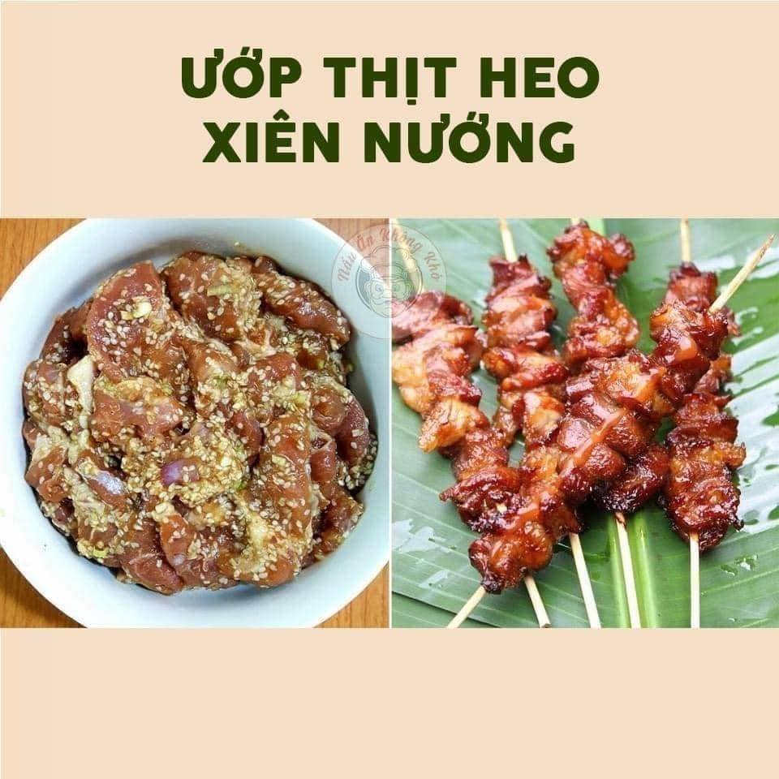

Món thịt xiên nướng

Nguyên Liệu
- 500g thịt heo (nên chọn thịt vai giòn hoặc nạc dăm)
Gia Vị Ướp Thịt
- 1 thìa canh tỏi băm
- 1 thìa canh sả băm
- 1 thìa canh hành tím băm
- 2 thìa to vừng trắng
- 1/2 thìa canh mật ong
- 2 thìa canh dầu điều
- 1 thìa canh dầu hào
Cách Làm
- Rửa sạch thịt với nước muối loãng, sau đó thái mỏng vừa ăn.
- Trộn đều các gia vị với thịt, ướp ít nhất 2-4 giờ hoặc để qua đêm trong tủ lạnh.
- Ngâm que xiên khoảng 10 phút trước khi xiên thịt.
- Nướng thịt trên bếp than hoặc lò nướng đến khi chín vàng.